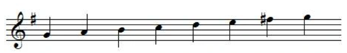
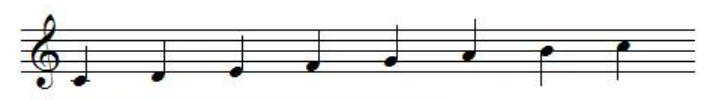
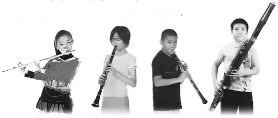

1. 認識C/G大調音階

以上旋律主音 d 的音名是()，t' 的音名是()，是() 大調的音樂。

以上旋律主音 d 的音名是()，t' 的音名是()，是() 大調的音樂。
C 大調音階有幾個升號或降號？
G 大調音階有幾個升號或降號？
G 大調音階中，哪個音需要升高半音？
哪一組是 G 大調音階的正確音名順序？
哪一組是 C 大調音階的正確音名順序？
如果你在五線譜上看到 1 個升號，而且這個升號是 F 升，這最可能是哪個調？
C 大調音階中，E 下一個音是什麼？
《小時候》歌曲的氣氛是怎樣的？
《小時候》原曲版本是哪一個調？
2. 音樂的對比
《地獄中的奧菲歐》的作曲家為
《地獄中的奧菲歐》的「肯肯舞」的旋律.它的速度
《地獄中的奧菲歐》的「肯肯舞」的旋律.它的主旋律音高
《地獄中的奧菲歐》的「肯肯舞」的旋律.它的力度
《地獄中的奧菲歐》的「烏龜」的旋律.它的樂器數量
《地獄中的奧菲歐》的「烏龜」的旋律.它的氣氛
《滑浪飛船》的聲效不包括
3. 木管樂欣賞

樂器1()
樂器2()
樂器3()
樂器4()
吹奏木管樂器時，可按不同的()改變音高。
()的()較幼，音域較高。
()的()較粗，音域較低。
單簧管和雙簧管都由裝在()的簧片振動管內的空氣發聲。
音樂的織體為:
() 一條主旋律配和聲伴奏。
() 多條旋律同時進行。
() 只有一條旋律。
《第九交響曲》（新世界）的作曲家為
《降B大調巴松管協奏曲》的作曲家為
《降B大調巴松管協奏曲》的織體為
二部輪奏《幻變彩虹》的織體為
4. 唱唱做做學粵劇
特徵
() 有鮮明性格/具英雄氣概的角色
() 年紀較大/端莊的男性角色
() 飾演滑稽的角色
() 主要的男性角色，一般年輕英俊
() 主要的女性角色，扮相漂亮
化妝
() 佩帶各種類型的髯口
() 眼部勾畫成笑態/中間用白色勾畫
() 以紅色和白色為主
() 以紅色和白色為主
() 一般以不同的臉譜代表不同的性格，俗稱大花面
下列哪項有關粵劇是不正確?
工尺譜是粵劇常用的記譜法，用()表示音高，用()表示節拍和節奏。
演唱方法
() 真聲
() 假聲唱，高八度
行當演唱
() 生,淨
() 旦
粵劇的唸白是劇中人物()或人物之間的()。
下列哪一種不是粵劇的唸白?
以下哪項不是粵劇的武打:
何建青《白蛇傳 水鬥》選段中出現哪些武打動作？
粵劇通過哪項來表達故事情節?